遊びで植物を育てよう
2021/06/20
キウイの発芽は簡単ですね。
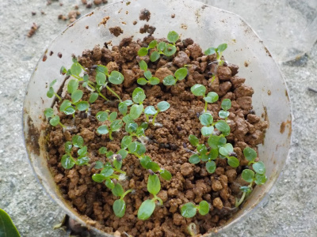
一か月前に種蒔きしたキウイが沢山発芽していました。
まだ小さいので、もうちょっと成長したら鉢上げしようと思います。
雄木になるか雌木になるか分からないので、6本くらいは育てた方がいいかな。
枯れる可能性もあるので、8本あった方がいいかな？
【キウイTOP】
【果物TOP】
【園芸TOP】
2021/05/23
ゴールデンキウイの種蒔きをしました。
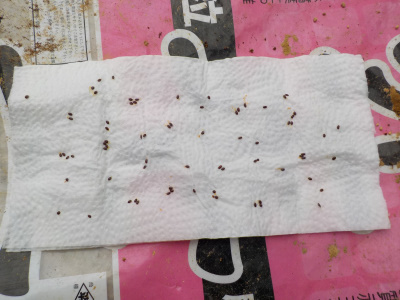
以前にもキウイは種蒔きしてて何本も順調に育っているんですが、また種を育ててみたくなりました。
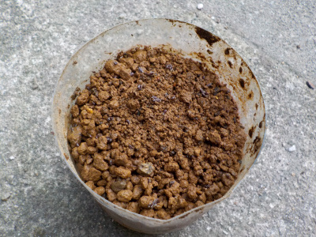
今回は水耕栽培はやめて、ペットボトルのちょっと密閉空間に蒔きました。
たぶんこっちの方が楽だと思います。放置しておけば勝手に芽が出るんじゃないかと予想しています。
【キウイTOP】
【果物TOP】
【園芸TOP】
2021/04/17
鉢植えのキウイを地植えにしました。

実生のキウイは何本も鉢から地植えに変えていたんですが、まだ2本が鉢のまま残っていました。
このまま置いていても何の役にも立たなそうなので、キウイが植えてある近くに植替えしました。
育ったらちょっと窮屈な感じになります。
日がだんだん長くなったので、今日は18：30まで作業が出来ました。
【キウイTOP】
【果物TOP】
【園芸TOP】
2020/08/29
7月に地植えにしたキウイが枯れました。
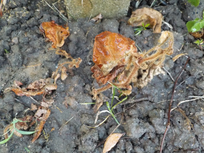
夏の暑さで水切れしました。
油断してました。
もう復活しないかもしれませんが、これからは頻繁に水やりをしようと思っています。
【キウイTOP】
【果物TOP】
【園芸TOP】
2020/07/18
キウイの水耕栽培に限界を感じました。
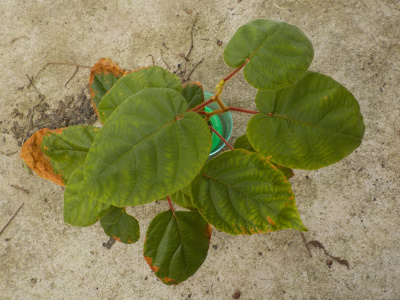
キウイの水耕栽培ですが、成長が止まった気がします。
葉っぱも薄く黄色くなりました。
このまま置いてても現状維持か枯れると思ったので、土に植えました。

今まで屋内の水耕栽培でぬくぬく育っていたので直ぐに枯れるかもしれません。
でも兄弟苗が何本も育っているので惜しくないかな。
【キウイTOP】
【果物TOP】
【園芸TOP】
2020/07/12
実生のキウイは葉っぱが大きいです。
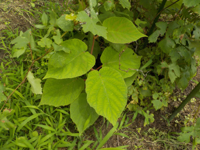
実生のキウイがすくすく育っていますが、葉っぱがとても大きい。
家には実生じゃないキウイもあるんですが、それよりとても大きいです。
受粉に使っている花粉は何でしょうね？
【キウイTOP】
【果物TOP】
【園芸TOP】
2020/03/08
実生のキウイを地植えにしました。
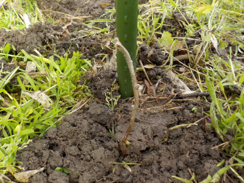
ポットのキウイを地植えにしました。
小さいけど育つかなー。
【キウイTOP】
【果物TOP】
【園芸TOP】
2020/02/23
室内水耕栽培のキウイの一部を屋外に移動しました。
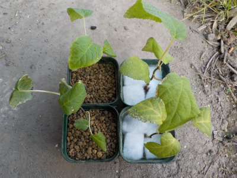
これから暖かくなりそうなので、屋外に移動しました。
2本は水耕栽培でろ過ウール、もう２本は土に植えました。
成長に差がでるかな？
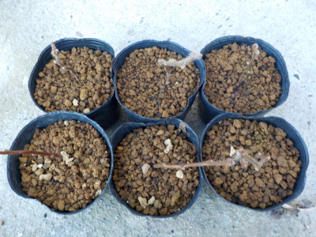
これは去年から屋外で育てているキウイです。
まだ冬モードです。
【キウイTOP】
【果物TOP】
【園芸TOP】
2020/02/15
冬の水耕栽培のキウイです。
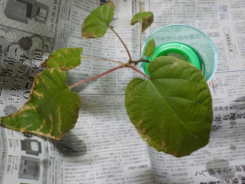
屋内なので葉っぱが落ちませんでした。
種まきから１１か月経ってこんな感じです。
今後さらに大きくなると思うと、屋内よりも屋外に出したほうがいいかな。
【キウイTOP】
【果物TOP】
【園芸TOP】
2019/10/27
キウイのポットを3個追加しました。
先週ポット苗を3個作りましたが、今週も3個追加です。

増やすのはいいけど、ちゃんと育てれるかな？
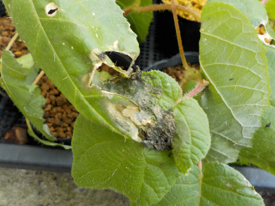
先週のキウイは虫に食べられていました。
外敵は怖いですね。
【キウイTOP】
【果物TOP】
【園芸TOP】
2019/10/20
水耕栽培キウイ3つをポット苗にしました。
2019/10/09
キウイの水耕栽培を１本にしました。
2019/07/28
キウイの苗が高温で痛められました。
2019/07/28
キウイの水耕栽培をしています。
2019/07/06
キウイの植え直しをしました。
2019/05/19
キウイのタッパー栽培はやめました。
2019/04/03
キウイの種から根が出てきました。
2019/03/10
キウイの種を蒔きました。
2016/07/03
キウイにキノコかな？
2014/05/31
キウイの実が出来ていました。
【キウイTOP】
【果物TOP】
【園芸TOP】
キウイを沢山育てて沢山食べたい。
【おいしいものを食べよう。】【たくさん寝よう。】
【ソロ活をしよう!】【季節感のあることをしよう。】【動画視聴はほどほどに。】【当サイトの全てのコンテンツは無断転載禁止です。】